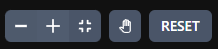

Mithilfe der zwei Buttons können korrekte und falsche Zeichenketten erstellt werden.
Beim erneuten Betätigen der Buttons erscheint jeweils ein neues Beispiel.
Hierbei kann ein zufälliges Beispiel aus der Button-Ausgabe, aber auch ein eigenes Beispiel gewählt werden.
Für das Tutorial betrachten wir zunächst die Zeichenkette "BTSXXVPSE".
Die Verarbeitung beginnt immer beim Startzustand {1}. Anschließend werden die enthaltenen Eingaben verarbeitet. Hierfür klicken wir auf die entsprechenden Symbole im Graphen:
Können alle Eingaben erfolgreich verarbeitet und mit der letzten Eingabe der Endzustand erreicht werden, dann handelt es sich um eine korrekte Zeichenkette.
Aber wie erkennen wir eine falsche Zeichenkette? Hierfür betrachten wir das Beispiel "BSBTTPPXT":
Die erste Eingabe "B" kann noch erfolgreich verarbeitet werden. Jedoch kann danach das "S" nicht verarbeitet werden - wir befinden uns in einer Art Sackgasse. Unsere Bedingungen für eine korrekte Zeichenkette können somit nicht erfüllt werden. Dadurch haben wir belegt, dass es sich um eine falsche Zeichenkette handelt.

Mit dem "RESET"-Button können wir den Reber-Grammar-Automaten in den Ursprungszustand zurückversetzen und direkt mit der nächsten Überprüfung starten. Mit den anderen Buttons in der Leiste können Anpassungen bei der Ansicht vorgenommen werden.